library(shinyrecipes)
As discussed in the section on creating the recipe, once it is created using a formula, variables are cataloged with roles of outcomes or predictors. Roles are useful to select/deselect the variables that we will use in the preprocessing steps. In this way, we can only choose to impute the missing values, for example, of the variables of a certain role. It may be useful to create new roles assigned to certain variables so that they can be selected later more easily. You can learn more about roles {here}.
The process to modify roles in our gadget is simple:
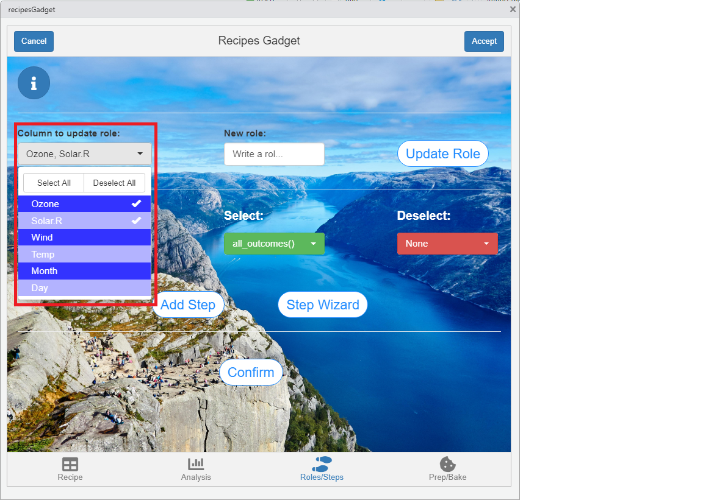
You can repeat the process to update as many variable roles as you want.
To add the steps you can choose two ways to do it. The first way is more limited, since you can only select the step, the variables you select and the ones you deselect (if necessary).The second way is through the ‘Step Wizard’, which allows you to use more advanced selection methods (such as tidyselect helpers) or modify the step parameters.
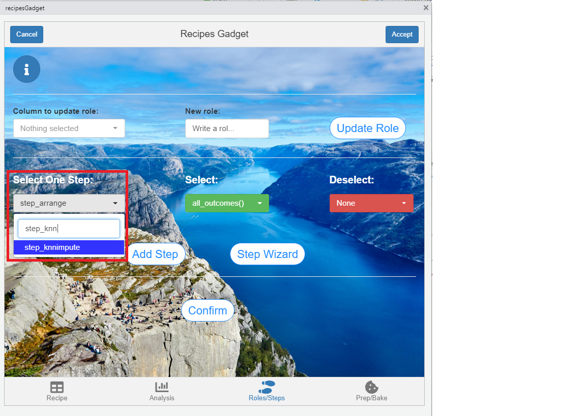
?selections in the console.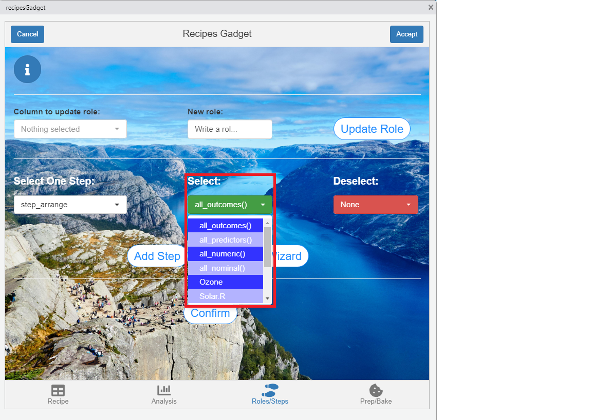
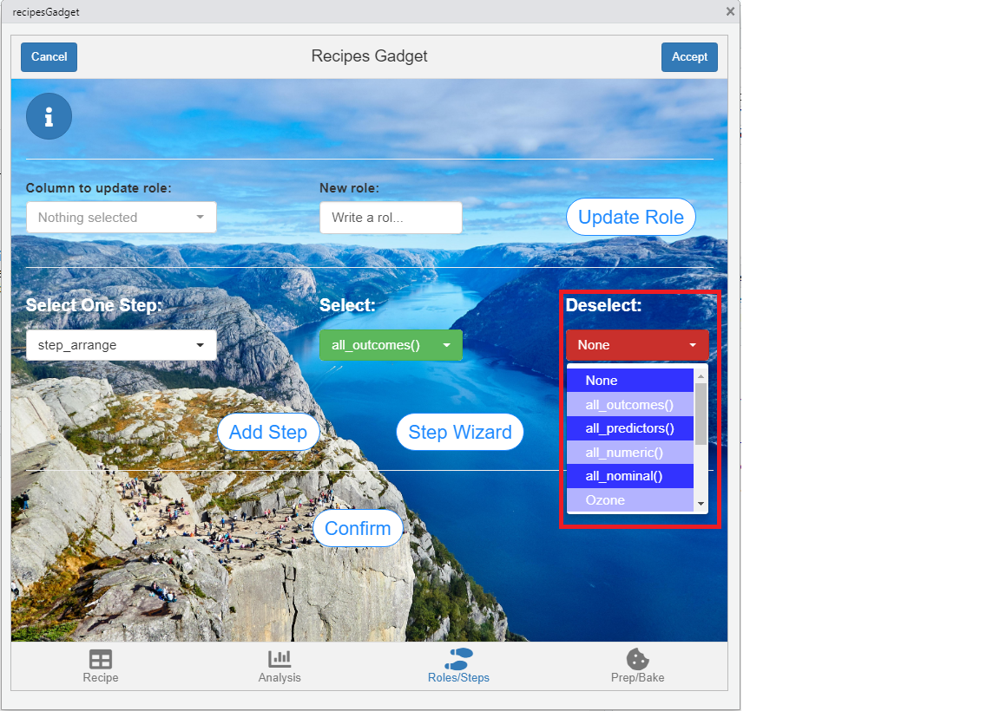
Many times, the first method is not enough because it does not offer all the possibilities to select variables or to modify the arguments of the steps. In this case, the solution is to use the wizard by pressing the ‘Step Wizard’ button.
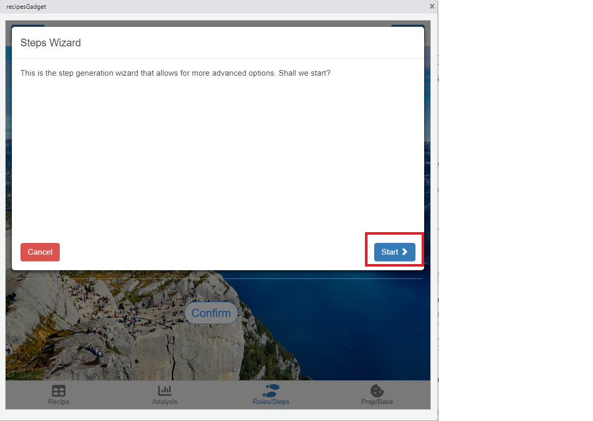
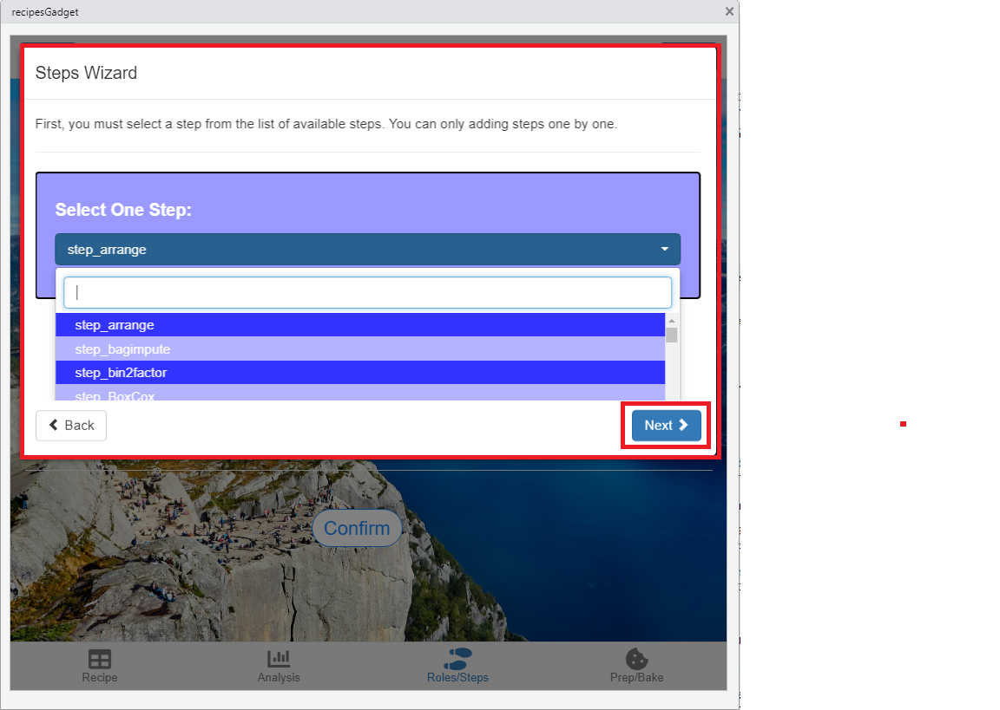
4.Select the variables on which the step will be applied. Now, you can use helpers like starts_with, contains, ends_with … in addition to all the methods discussed above.
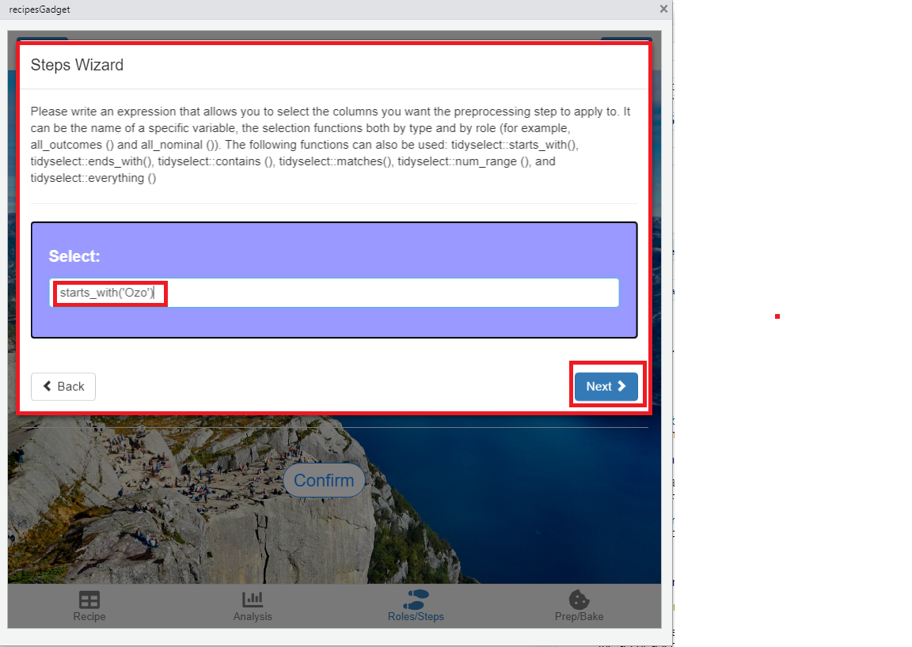
5.Deselect variables with the same methods applicable to the previous point. If you do not want to deselect any, leave ‘None’.
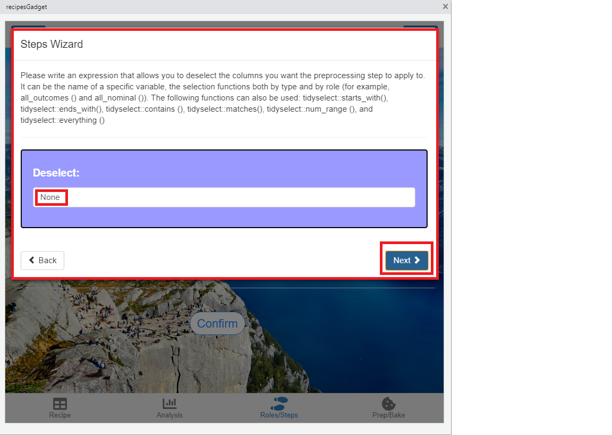
6.Modify the step parameters. For this, first select the parameter, then enter the new value and finally press the ‘Change Parameter’ button. Repeat this process with all the parameters you want to change.
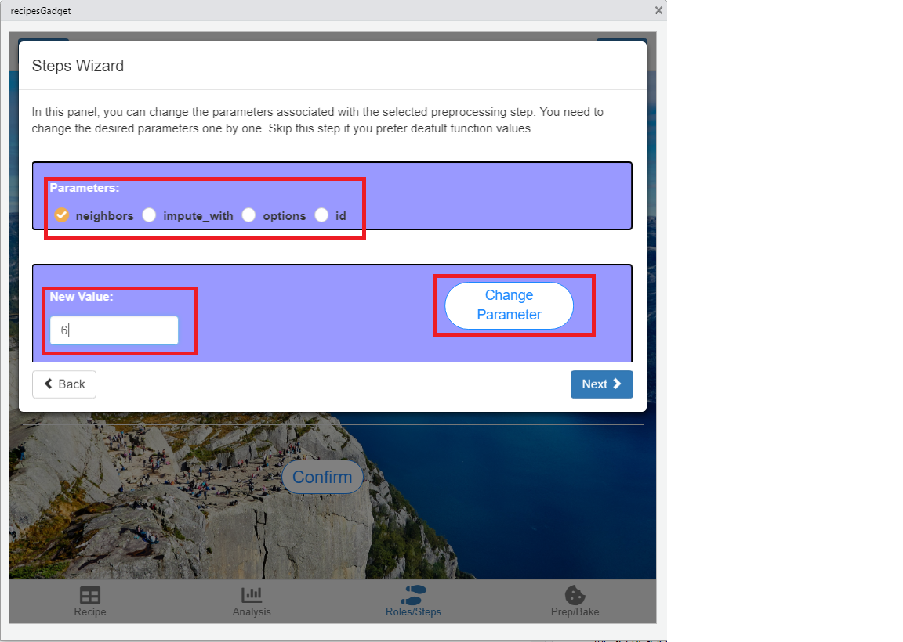
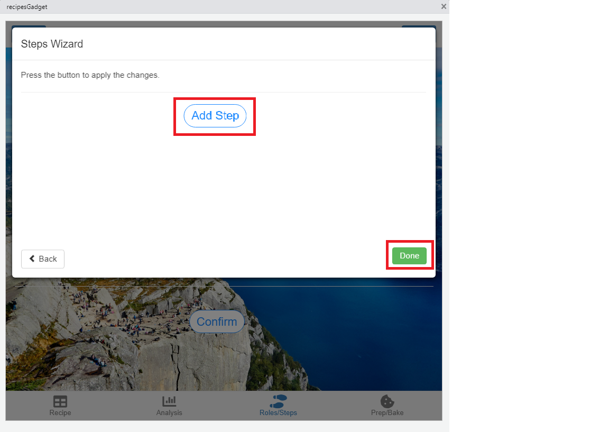
Once you have added the steps (either by the first method, the wizard or both), it is necessary to confirm those steps that will finally be applied.To do this, press the ‘Confirm’ button to initialize another wizard.
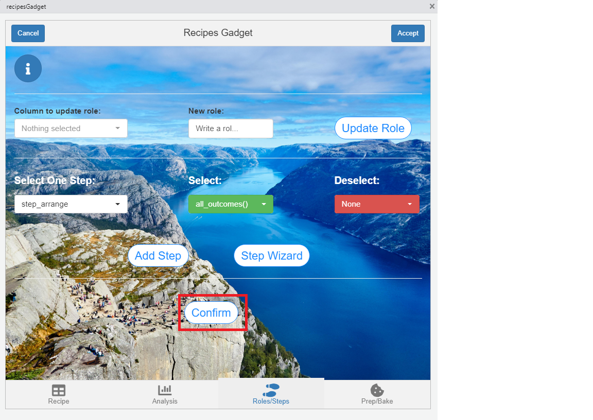
You must select all the steps you want to apply and press the ‘Confirm’ button. Once done, press ‘done’ to exit the wizard.
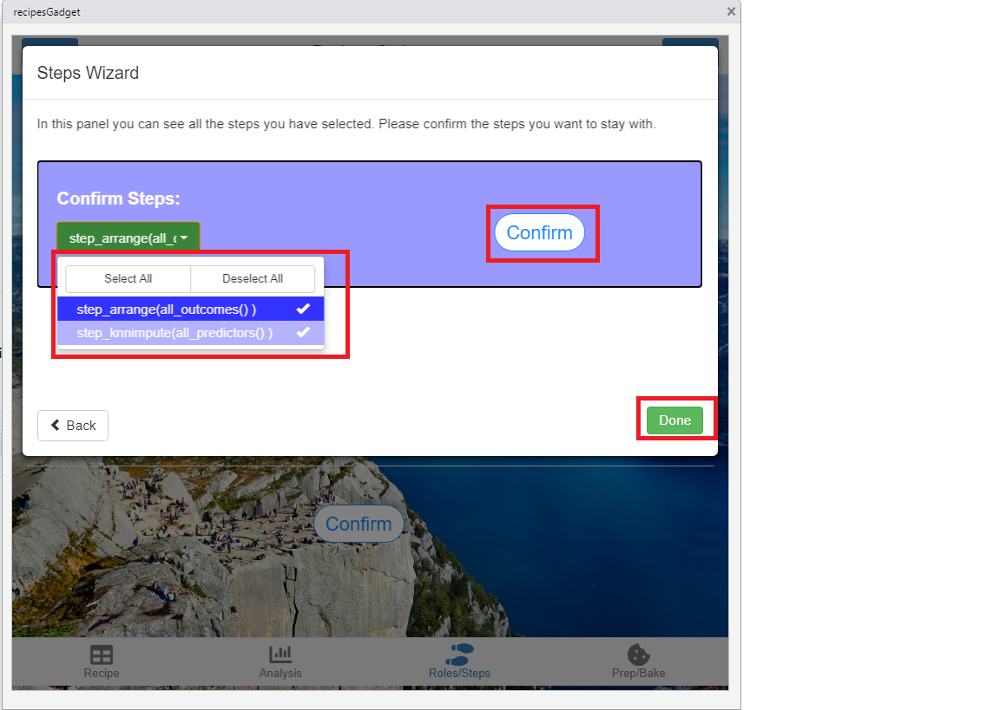